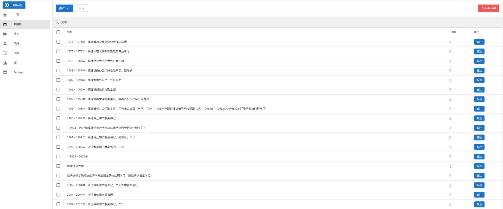
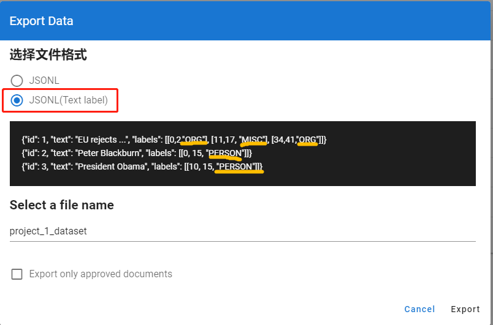

为了将非结构化的简历文本提取出有效的工作经历信息，尝试使用各类NLP框架进行文本实体识别，目标是分解出时间，工作地点，任职单位，职务等有效信息。
在尝试了一些分词和NLP框架后，选用hanLP 作为训练工具，在自己制作的数据集（人物简历信息）上训练自定义的NER标签（职务），实现特定标签的文本实体识别。
tensorflow 2.x
Colaboratory with GPU
hanLP 2.1
要制作自定义数据集，就离不开标注工具，这里选用著名的开源标注工具doccano
在服务器部署好doccano，导入数据

添加标签
开始标注
标注完成后导出数据

注意这里选择第二种格式，这种格式会带着你的标签名字一起导出。
上面导出的JSONL数据并不能直接作为训练集放入NLP框架中训练，通用的训练集一般都使用BIO，BIOES，BMES标注
一、BMES 四位序列标注法
示例：
同时NER训练集一般有“CoNLL 2003” “MSRA”两种dataset形式，doccano为我们提供了doccano-transformer这个转化工具，由于该工具面向是英文文本，所以在转化中文文本是有一些小问题，这里我fork了一份doccano-transformer并进行了修正，可以下载我的这份代码
使用
1 2 3 4 5 from doccano_transformer.datasets import NERDatasetfrom doccano_transformer.utils import read_jsonldataset = read_jsonl(filepath='example.jsonl' , dataset=NERDataset, encoding='utf-8' ) dataset.to_conll2003(tokenizer=str.split) 这里注意to_conll2003(tokenizer)方法的参数tokenizer是一个文本分割方法，当传入的是str.split则是将string使用所有的空字符，包括空格、换行(\n)、制表符(\t)等进行分割。这种分割方式对英文句子里每个英文单词使用空字符分割的情况完美适配，但是含有中文文本的句子如果按照这种方式，连续的汉字无法被分割，导致无法正常标注。
所以我们需要编写能将文本中的数字英文按空字符分割，中文按汉字分割的方法：
1 2 3 4 5 6 7 8 9 10 11 12 13 14 15 16 17 18 19 20 21 22 import redef get_word_list (s1) : res = re.compile(r"([\u4e00-\u9fa5])" ) p1 = res.split(s1) str1_list = [] for str in p1: if res.split(str) == None : str1_list.append(str) else : ret = res.split(str) for ch in ret: str1_list.append(ch) list_words = [w for w in str1_list if len(w.strip()) > 0 ] lists=[] for list_word in list_words: splits = list_word.split() for split in splits: lists.append(split) return lists
应用
1 dataset = dataset.to_conll2003(tokenizer=get_word_list)
然后将dataset输出成tsv，即完成了训练集的制作。
参考hanLP的文档，训练就非常简单了
1 2 3 4 5 6 7 8 9 10 11 12 import hanlpfrom hanlp.components.ner_tf import TransformerNamedEntityRecognizerTFrecognizer = TransformerNamedEntityRecognizerTF() save_dir = 'data/model/ner/finetune_ner_albert_base_zh_msra' CONLL03_RESUME_TRAIN="Output_train.tsv" CONLL03_RESUME_TEST="Output_test.tsv" recognizer.fit(CONLL03_RESUME_TRAIN, CONLL03_RESUME_TEST, save_dir, epochs=20 , transformer='albert_base_zh' , finetune=hanlp.pretrained.ner.MSRA_NER_ALBERT_BASE_ZH) recognizer.load(save_dir) print(recognizer.predict(list('2020年6月23日上午，吴江区第十六届人大常委会第二十九次会议召开，审议和通过有关人事任免，同意李铭同志因工作变动辞去吴江区区长职务' ))) print(f'Model saved in {save_dir} ' )
这里使用MSRA_NER_ALBERT_BASE_ZH预训练模型进行finetune操作，训练结果如下
1 2 3 4 5 6 7 8 9 10 11 12 13 14 15 16 17 18 19 20 21 22 23 24 25 26 27 28 29 30 31 32 33 34 35 36 37 38 39 40 41 42 43 44 45 46 47 48 49 50 51 52 53 54 55 56 57 58 59 60 61 62 63 64 65 66 67 68 69 70 71 72 73 74 75 76 77 78 79 80 81 82 83 84 85 2021-03-04 10:18:23 INFO Hyperparameter: { "batch_size": 32, "epochs": 20, "run_eagerly": false, "finetune": "https://file.hankcs.com/hanlp/ner/ner_albert_base_zh_msra_20200111_202919.zip", "transformer": "albert_base_zh", "optimizer": "adamw", "learning_rate": 5e-05, "weight_decay_rate": 0, "epsilon": 1e-08, "clipnorm": 1.0, "warmup_steps_ratio": 0, "use_amp": false, "max_seq_length": 128, "metrics": "f1" } 2021-03-04 10:18:23 INFO Vocab summary: tag_vocab[4] = ['<pad>', 'O', 'B-job', 'I-job'] 2021-03-04 10:18:23 INFO Building... 2021-03-04 10:18:25 INFO Model built: Model: "model_4" __________________________________________________________________________________________________ Layer (type) Output Shape Param # Connected to ================================================================================================== input_ids (InputLayer) [(None, 128)] 0 __________________________________________________________________________________________________ token_type_ids (InputLayer) [(None, 128)] 0 __________________________________________________________________________________________________ mask_ids (InputLayer) [(None, 128)] 0 __________________________________________________________________________________________________ albert (BertModelLayer) (None, 128, 768) 9957376 input_ids[0][0] token_type_ids[0][0] mask_ids[0][0] __________________________________________________________________________________________________ dense_4 (Dense) (None, 128, 4) 3076 albert[0][0] ================================================================================================== Total params: 9,960,452 Trainable params: 9,960,452 Non-trainable params: 0 __________________________________________________________________________________________________ 2021-03-04 10:18:25 INFO Loaded pretrained weights from /root/.hanlp/ner/ner_albert_base_zh_msra_20200111_202919/model.h5 for finetuning Epoch 1/20 15/15 [==============================] - 70s 5s/step - loss: 13.7708 - f1: 0.0012 - val_loss: 2.4522 - val_f1: 0.0946 Epoch 2/20 15/15 [==============================] - 69s 5s/step - loss: 2.0932 - f1: 0.1956 - val_loss: 1.2397 - val_f1: 0.4171 Epoch 3/20 15/15 [==============================] - 69s 5s/step - loss: 1.0135 - f1: 0.3879 - val_loss: 0.9292 - val_f1: 0.4541 Epoch 4/20 15/15 [==============================] - 68s 5s/step - loss: 0.7765 - f1: 0.3948 - val_loss: 1.0566 - val_f1: 0.4069 Epoch 5/20 15/15 [==============================] - 69s 5s/step - loss: 0.6658 - f1: 0.4120 - val_loss: 0.5538 - val_f1: 0.5824 Epoch 6/20 15/15 [==============================] - 68s 5s/step - loss: 0.6176 - f1: 0.5337 - val_loss: 0.4626 - val_f1: 0.5601 Epoch 7/20 15/15 [==============================] - 68s 5s/step - loss: 0.6748 - f1: 0.4999 - val_loss: 0.4283 - val_f1: 0.6131 Epoch 8/20 15/15 [==============================] - 68s 5s/step - loss: 0.3727 - f1: 0.6239 - val_loss: 0.3824 - val_f1: 0.6786 Epoch 9/20 15/15 [==============================] - 68s 5s/step - loss: 0.5163 - f1: 0.6342 - val_loss: 0.2894 - val_f1: 0.6708 Epoch 10/20 15/15 [==============================] - 67s 5s/step - loss: 0.2572 - f1: 0.6855 - val_loss: 0.3856 - val_f1: 0.6812 Epoch 11/20 15/15 [==============================] - 67s 5s/step - loss: 0.3237 - f1: 0.6667 - val_loss: 0.2107 - val_f1: 0.7319 Epoch 12/20 15/15 [==============================] - 68s 5s/step - loss: 0.2778 - f1: 0.7104 - val_loss: 0.2025 - val_f1: 0.7081 Epoch 13/20 15/15 [==============================] - 66s 5s/step - loss: 0.1871 - f1: 0.7224 - val_loss: 0.1639 - val_f1: 0.8040 Epoch 14/20 15/15 [==============================] - 67s 5s/step - loss: 0.1868 - f1: 0.7405 - val_loss: 0.1240 - val_f1: 0.8250 Epoch 15/20 15/15 [==============================] - 67s 5s/step - loss: 0.1251 - f1: 0.7685 - val_loss: 0.1278 - val_f1: 0.8143 Epoch 16/20 15/15 [==============================] - 66s 5s/step - loss: 0.1123 - f1: 0.8196 - val_loss: 0.0957 - val_f1: 0.8591 Epoch 17/20 15/15 [==============================] - 67s 5s/step - loss: 0.1021 - f1: 0.8548 - val_loss: 0.0814 - val_f1: 0.8973 Epoch 18/20 15/15 [==============================] - 66s 5s/step - loss: 0.0803 - f1: 0.8640 - val_loss: 0.0737 - val_f1: 0.8945 Epoch 19/20 15/15 [==============================] - 67s 5s/step - loss: 0.0879 - f1: 0.8620 - val_loss: 0.0679 - val_f1: 0.9035 Epoch 20/20 15/15 [==============================] - 67s 5s/step - loss: 0.0670 - f1: 0.9267 - val_loss: 0.0639 - val_f1: 0.9114 2021-03-04 10:40:57 INFO Trained 20 epochs in 22 m 32 s, each epoch takes 1 m 8 s [('6', 'ad>', 5, 6), ('日上午', 'job', 9, 12), ('吴江区第十', 'job', 13, 18), ('大', 'job', 21, 22), ('会', 'job', 30, 31)] Model saved in data/model/ner/finetune_ner_albert_base_zh_msra
训练过程没有问题，但是训练出来的模型效果一般，问题可能出在训练集数据太少，后面会做进一步探索。